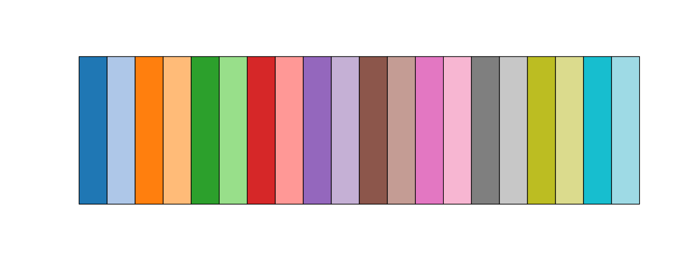
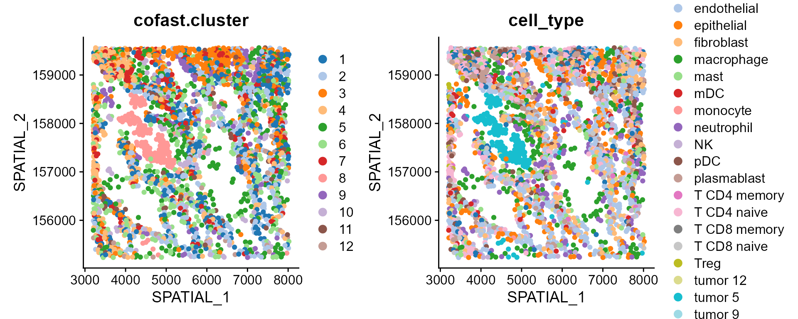
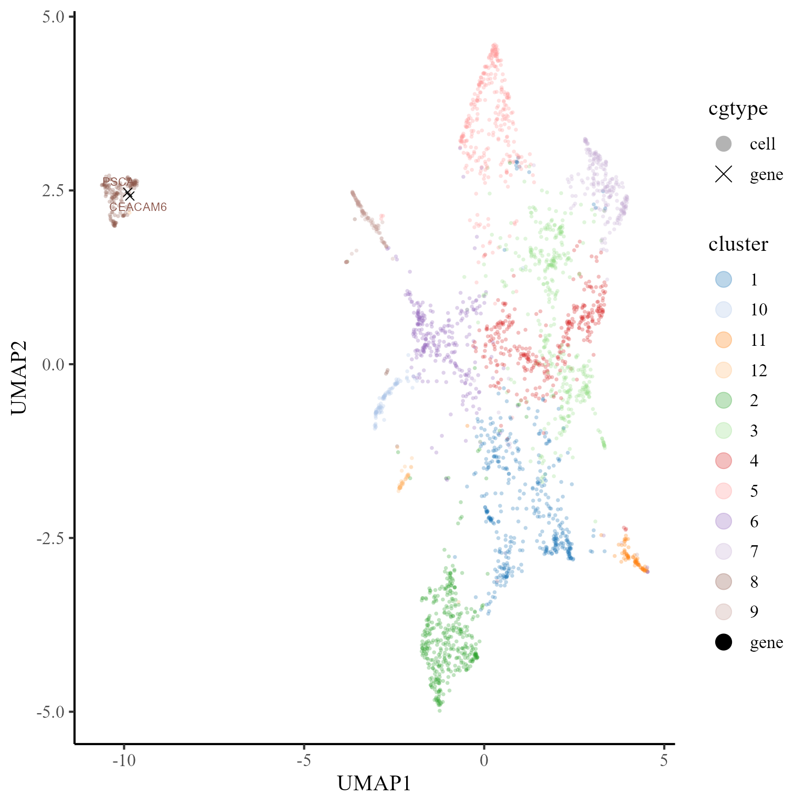
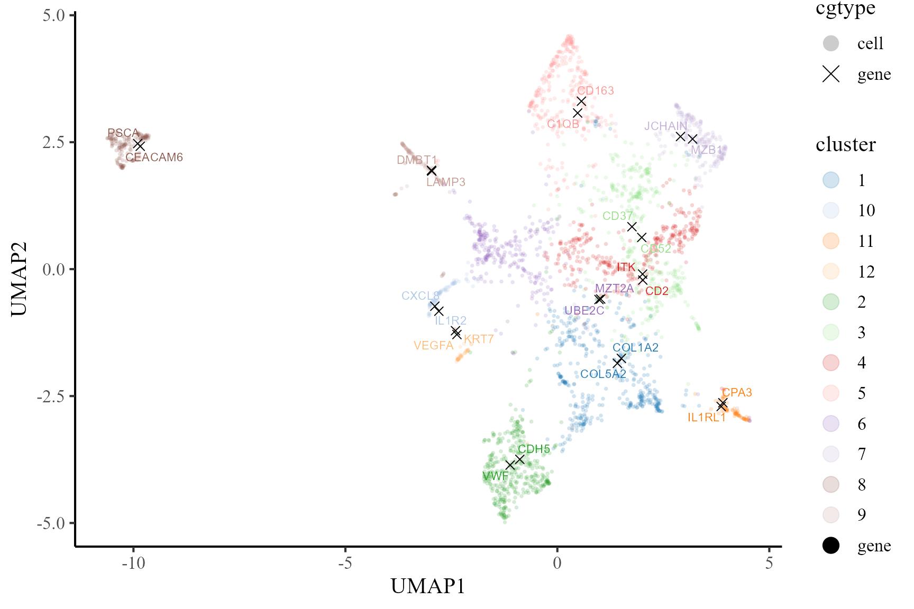
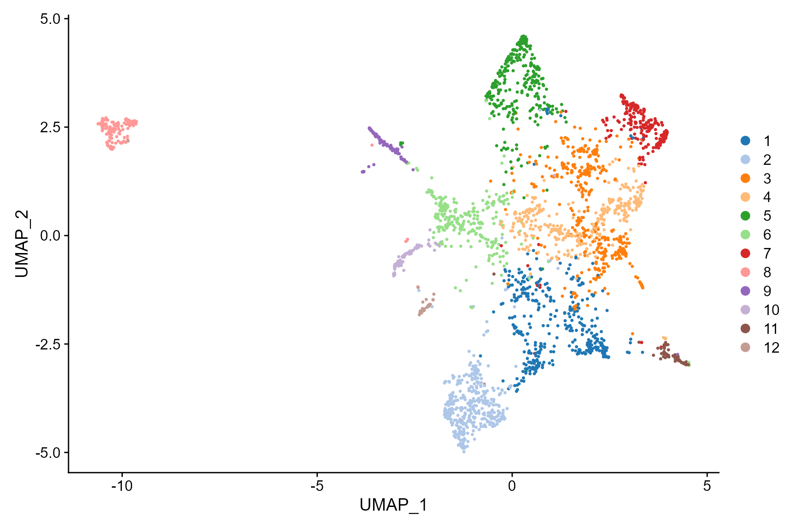
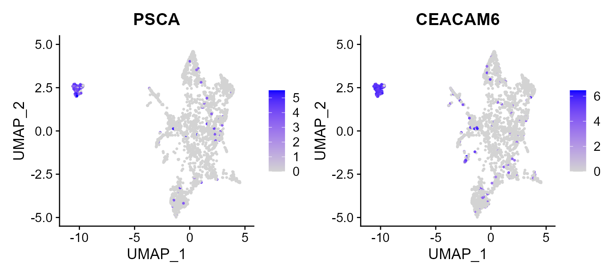

This vignette introduces the coFAST workflow for the analysis of NSCLC CosMx spatial transcriptomics dataset. In this vignette, the workflow of coFAST consists of three steps
- Independent preprocessing and model setting
- Coembedding dimension reduction
- Downstream analysis (i.e. , signature gene analysis, visualization of cell types and coembeddings,)
Load and view data
We demonstrate the use of coFAST to NSCLC data, which can be downloaded to the current working path by the following command:
set.seed(2024) # set a random seed for reproducibility.
library(coFAST) # load the package of coFAST method
#>
#>
library(Seurat)
#> Loading required package: SeuratObject
#> Loading required package: sp
#>
#> Attaching package: 'SeuratObject'
#> The following objects are masked from 'package:base':
#>
#> intersect, t
data(CosMx_subset)
CosMx_subset
#> An object of class Seurat
#> 960 features across 2814 samples within 1 assay
#> Active assay: RNA (960 features, 960 variable features)
#> 2 layers present: counts, dataPreprocessing
First, we normalize the data.
CosMx_subset <- NormalizeData(CosMx_subset)Then, we select the variable genes.
CosMx_subset <- FindVariableFeatures(CosMx_subset)Coembedding using coFAST
We introduce how to use coFAST to perform coembedding for this CosMx data. First, we determine the dimension of coembeddings. Then, we select the variable genes.
dat_cor <- diagnostic.cor.eigs(CosMx_subset)
Subsequently, we calculate coembeddings by utilizing coFAST, and
observe that the reductions field acquires an additional
component named fast.
pos <- as.matrix(CosMx_subset@meta.data[,c("x", "y")]) # Extract the spatial coordinates
Adj_sp <- AddAdj(pos) ## calculate the adjacency matrix
#> The spatial cooridnates are 2 dimensions
#> Find the adjacency matrix by bisection method...
#> Current radius is 62.34
#> Median of neighborhoods is 0
#> Current radius is 93.01
#> Median of neighborhoods is 2
#> Current radius is 93.01
#> Median of neighborhoods is 5
CosMx_subset <- coFAST(CosMx_subset, Adj_sp = Adj_sp, q = q_est)
#> Finish variable intialization
#> Satrt ICM and E-step!
#> Finish ICM and E-step!
#> iter = 2, loglik= -1426036.512228, dloglik=0.999336
#> Satrt ICM and E-step!
#> Finish ICM and E-step!
#> iter = 3, loglik= -1412722.734084, dloglik=0.009336
#> Satrt ICM and E-step!
#> Finish ICM and E-step!
#> iter = 4, loglik= -1409935.716061, dloglik=0.001973
#> Satrt ICM and E-step!
#> Finish ICM and E-step!
#> iter = 5, loglik= -1408112.792632, dloglik=0.001293
#> Satrt ICM and E-step!
#> Finish ICM and E-step!
#> iter = 6, loglik= -1407078.332386, dloglik=0.000735
#> Satrt ICM and E-step!
#> Finish ICM and E-step!
#> iter = 7, loglik= -1406307.821844, dloglik=0.000548
#> Satrt ICM and E-step!
#> Finish ICM and E-step!
#> iter = 8, loglik= -1405752.638142, dloglik=0.000395
#> Satrt ICM and E-step!
#> Finish ICM and E-step!
#> iter = 9, loglik= -1405322.991573, dloglik=0.000306
#> Satrt ICM and E-step!
#> Finish ICM and E-step!
#> iter = 10, loglik= -1404988.225441, dloglik=0.000238
#> Satrt ICM and E-step!
#> Finish ICM and E-step!
#> iter = 11, loglik= -1404720.086242, dloglik=0.000191
#> Satrt ICM and E-step!
#> Finish ICM and E-step!
#> iter = 12, loglik= -1404502.801026, dloglik=0.000155
#> Satrt ICM and E-step!
#> Finish ICM and E-step!
#> iter = 13, loglik= -1404323.837749, dloglik=0.000127
#> Satrt ICM and E-step!
#> Finish ICM and E-step!
#> iter = 14, loglik= -1404174.551626, dloglik=0.000106
#> Satrt ICM and E-step!
#> Finish ICM and E-step!
#> iter = 15, loglik= -1404048.246092, dloglik=0.000090
#> Satrt ICM and E-step!
#> Finish ICM and E-step!
#> iter = 16, loglik= -1403940.000384, dloglik=0.000077
#> Satrt ICM and E-step!
#> Finish ICM and E-step!
#> iter = 17, loglik= -1403846.063218, dloglik=0.000067
#> Satrt ICM and E-step!
#> Finish ICM and E-step!
#> iter = 18, loglik= -1403763.627389, dloglik=0.000059
#> Satrt ICM and E-step!
#> Finish ICM and E-step!
#> iter = 19, loglik= -1403690.551299, dloglik=0.000052
#> Satrt ICM and E-step!
#> Finish ICM and E-step!
#> iter = 20, loglik= -1403625.203865, dloglik=0.000047
#> Satrt ICM and E-step!
#> Finish ICM and E-step!
#> iter = 21, loglik= -1403566.324126, dloglik=0.000042
#> Satrt ICM and E-step!
#> Finish ICM and E-step!
#> iter = 22, loglik= -1403512.932206, dloglik=0.000038
#> Satrt ICM and E-step!
#> Finish ICM and E-step!
#> iter = 23, loglik= -1403464.256781, dloglik=0.000035
#> Satrt ICM and E-step!
#> Finish ICM and E-step!
#> iter = 24, loglik= -1403419.685684, dloglik=0.000032
#> Satrt ICM and E-step!
#> Finish ICM and E-step!
#> iter = 25, loglik= -1403378.726805, dloglik=0.000029
#> 2025-03-15 20:08:02.522399 : ***** Finish CoFAST, 0.129 mins elapsed.
CosMx_subset
#> An object of class Seurat
#> 960 features across 2814 samples within 1 assay
#> Active assay: RNA (960 features, 960 variable features)
#> 2 layers present: counts, data
#> 1 dimensional reduction calculated: cofastDownstream analysis
Clustering and assess the cluster significance
First, we show how to use the spot embedding for spatial domain
segmentation. User can set the number of clusters as fixed value, i.e.,
K=10; or set K=NULL using the default resolution. The cluster results
are in the cofast.cluster column of data.frame
meta.data slot. The Idents of Seurat object is also set as
cofast.cluster.
CosMx_subset <- AddCluster(CosMx_subset)
#> Computing nearest neighbor graph
#> Computing SNN
#> Modularity Optimizer version 1.3.0 by Ludo Waltman and Nees Jan van Eck
#>
#> Number of nodes: 2814
#> Number of edges: 105139
#>
#> Running Louvain algorithm...
#> Maximum modularity in 10 random starts: 0.8115
#> Number of communities: 12
#> Elapsed time: 0 seconds
print(head(CosMx_subset))
#> orig.ident nCount_RNA nFeature_RNA x y cell_type
#> c_1_1_2 c 26 23 6092.889 158834.7 endothelial
#> c_1_1_3 c 74 51 7214.889 158843.7 endothelial
#> c_1_1_4 c 60 48 7418.889 158813.7 pDC
#> c_1_1_5 c 52 39 7446.889 158845.7 macrophage
#> c_1_1_7 c 419 153 3902.889 158820.7 macrophage
#> c_1_1_8 c 42 35 3992.889 158832.7 endothelial
#> c_1_1_9 c 249 103 4067.889 158827.7 plasmablast
#> c_1_1_10 c 99 52 4111.889 158842.7 pDC
#> c_1_1_11 c 98 62 4254.889 158841.7 mDC
#> c_1_1_12 c 173 90 4495.889 158830.7 macrophage
#> cofast.cluster seurat_clusters
#> c_1_1_2 6 5
#> c_1_1_3 6 5
#> c_1_1_4 3 2
#> c_1_1_5 5 4
#> c_1_1_7 5 4
#> c_1_1_8 6 5
#> c_1_1_9 7 6
#> c_1_1_10 7 6
#> c_1_1_11 5 4
#> c_1_1_12 5 4
table(Idents(CosMx_subset))
#>
#> 1 2 3 4 5 6 7 8 9 10 11 12
#> 402 398 396 333 317 276 226 151 109 89 72 45We visualize the clusters on spatial coordinates.
CosMx_subset <- Addcoord2embed(CosMx_subset, coord.name = c("x", "y"))
print(CosMx_subset)
#> An object of class Seurat
#> 960 features across 2814 samples within 1 assay
#> Active assay: RNA (960 features, 960 variable features)
#> 2 layers present: counts, data
#> 2 dimensional reductions calculated: cofast, Spatial
cols_cluster <- PRECAST::chooseColors(palettes_name = 'Classic 20', n_colors=20, plot_colors = TRUE)
# DimPlot(CosMx_subset, reduction='Spatial', cols=cols_cluster, pt.size = 2)
DimPlot(CosMx_subset, reduction='Spatial', group.by = c("cofast.cluster", 'cell_type'), cols=cols_cluster, pt.size = 1.5)
Next, we assess the aggregation scores of each cluster on spatial space and embedding space. We calculated the spatial aggregation scores and found that cluster 8 (corresponding to tumor) has the highest spatial aggregation score, which is concordance with the spatial clustering map.
dat.spa.score <- AggregationScore(CosMx_subset, reduction.name = 'Spatial')
#> Loading required package: ade4
#> Warning: package 'ade4' was built under R version 4.4.2
#> Warning: package 'furrr' was built under R version 4.4.2
#> Loading required package: future
print(dat.spa.score)
#> num.spots AggScore
#> 1 402 10.849475
#> 2 398 9.867601
#> 3 396 33.444585
#> 4 333 24.748565
#> 5 317 16.587576
#> 6 276 10.080736
#> 7 226 19.048832
#> 8 151 99.386092
#> 9 109 27.294890
#> 10 89 16.201003
#> 11 72 3.558083
#> 12 45 2.638801Next, we calculated the embedding aggregation scores and found that cluster 8 also has the highest embedding aggregation score.
dat.embd.score <- AggregationScore(CosMx_subset, reduction.name = 'cofast')
print(dat.embd.score)
#> num.spots AggScore
#> 1 402 70.74596
#> 2 398 82.71345
#> 3 396 71.30350
#> 4 333 71.43045
#> 5 317 83.63599
#> 6 276 64.88092
#> 7 226 78.59129
#> 8 151 108.42777
#> 9 109 89.64092
#> 10 89 84.97524
#> 11 72 84.46171
#> 12 45 76.56332In the following, we show how to find the signature genes based on comebeddings. First, we calculate the distance matrix.
CosMx_subset <- pdistance(CosMx_subset, reduction = "cofast")
#> Calculate co-embedding distance...Next, we find the signature genes for each cell type
print(table(Idents(CosMx_subset)))
#>
#> 1 2 3 4 5 6 7 8 9 10 11 12
#> 402 398 396 333 317 276 226 151 109 89 72 45
#Idents(CosMx_subset) <- CosMx_subset$cell_type
df_sig_list <- find.signature.genes(CosMx_subset)
str(df_sig_list)
#> List of 12
#> $ 1 :'data.frame': 327 obs. of 4 variables:
#> ..$ distance : num [1:327] 17.2 17.3 17.3 17.4 17.4 ...
#> ..$ expr.prop: num [1:327] 0.706 0.254 0.781 0.303 0.311 ...
#> ..$ label : chr [1:327] "1" "1" "1" "1" ...
#> ..$ gene : chr [1:327] "COL1A2" "COL5A2" "FN1" "PDGFRA" ...
#> $ 10:'data.frame': 207 obs. of 4 variables:
#> ..$ distance : num [1:207] 15.9 18.4 19.2 19.3 19.7 ...
#> ..$ expr.prop: num [1:207] 0.865 0.315 0.225 0.213 0.348 ...
#> ..$ label : chr [1:207] "10" "10" "10" "10" ...
#> ..$ gene : chr [1:207] "CXCL8" "IL1R2" "HCAR2" "S100A8" ...
#> $ 11:'data.frame': 285 obs. of 4 variables:
#> ..$ distance : num [1:285] 16.1 16.3 16.9 17.4 18.3 ...
#> ..$ expr.prop: num [1:285] 0.972 0.708 1 1 0.806 ...
#> ..$ label : chr [1:285] "11" "11" "11" "11" ...
#> ..$ gene : chr [1:285] "CPA3" "IL1RL1" "TPSB2" "TPSAB1" ...
#> $ 12:'data.frame': 337 obs. of 4 variables:
#> ..$ distance : num [1:337] 17.8 18.1 18.4 18.4 18.5 ...
#> ..$ expr.prop: num [1:337] 0.933 0.711 0.311 0.733 0.511 ...
#> ..$ label : chr [1:337] "12" "12" "12" "12" ...
#> ..$ gene : chr [1:337] "KRT7" "VEGFA" "KRT4" "CD9" ...
#> $ 2 :'data.frame': 382 obs. of 4 variables:
#> ..$ distance : num [1:382] 15.2 15.3 15.5 15.8 15.8 ...
#> ..$ expr.prop: num [1:382] 0.842 0.55 0.407 0.352 0.477 ...
#> ..$ label : chr [1:382] "2" "2" "2" "2" ...
#> ..$ gene : chr [1:382] "VWF" "CDH5" "CLEC14A" "ADGRL2" ...
#> $ 3 :'data.frame': 358 obs. of 4 variables:
#> ..$ distance : num [1:358] 16.3 16.5 16.5 16.6 16.6 ...
#> ..$ expr.prop: num [1:358] 0.354 0.48 0.323 0.194 0.598 ...
#> ..$ label : chr [1:358] "3" "3" "3" "3" ...
#> ..$ gene : chr [1:358] "CD52" "CD37" "MS4A1" "TNFRSF13B" ...
#> $ 4 :'data.frame': 261 obs. of 4 variables:
#> ..$ distance : num [1:261] 15.2 15.3 15.3 15.6 15.6 ...
#> ..$ expr.prop: num [1:261] 0.27 0.321 0.465 0.441 0.246 ...
#> ..$ label : chr [1:261] "4" "4" "4" "4" ...
#> ..$ gene : chr [1:261] "ITK" "CD2" "IL7R" "PTPRC" ...
#> $ 5 :'data.frame': 326 obs. of 4 variables:
#> ..$ distance : num [1:326] 16.5 16.6 16.7 16.9 17.1 ...
#> ..$ expr.prop: num [1:326] 0.716 0.808 0.558 0.306 0.836 ...
#> ..$ label : chr [1:326] "5" "5" "5" "5" ...
#> ..$ gene : chr [1:326] "CD163" "C1QB" "GPNMB" "MS4A4A" ...
#> $ 6 :'data.frame': 76 obs. of 4 variables:
#> ..$ distance : num [1:76] 18.4 18.4 18.6 18.8 18.8 ...
#> ..$ expr.prop: num [1:76] 0.826 0.272 0.656 0.634 0.558 ...
#> ..$ label : chr [1:76] "6" "6" "6" "6" ...
#> ..$ gene : chr [1:76] "MZT2A" "UBE2C" "DUSP5" "TYK2" ...
#> $ 7 :'data.frame': 260 obs. of 4 variables:
#> ..$ distance : num [1:260] 14.1 14.8 15.4 15.7 15.8 ...
#> ..$ expr.prop: num [1:260] 0.743 0.717 0.354 0.664 0.903 ...
#> ..$ label : chr [1:260] "7" "7" "7" "7" ...
#> ..$ gene : chr [1:260] "MZB1" "JCHAIN" "CD79A" "IGHG2" ...
#> $ 8 :'data.frame': 412 obs. of 4 variables:
#> ..$ distance : num [1:412] 15.5 16.4 17.7 18.3 18.3 ...
#> ..$ expr.prop: num [1:412] 0.781 0.934 0.795 0.742 0.781 ...
#> ..$ label : chr [1:412] "8" "8" "8" "8" ...
#> ..$ gene : chr [1:412] "PSCA" "CEACAM6" "CXCL5" "TACSTD2" ...
#> $ 9 :'data.frame': 427 obs. of 4 variables:
#> ..$ distance : num [1:427] 17.8 17.9 18.3 18.3 19.2 ...
#> ..$ expr.prop: num [1:427] 0.798 0.798 0.963 0.642 0.514 ...
#> ..$ label : chr [1:427] "9" "9" "9" "9" ...
#> ..$ gene : chr [1:427] "LAMP3" "DMBT1" "LTF" "ITGB6" ...Then, we obtain the top five signature genes and organize them into a
data.frame. Next, we calculate the UMAP projections of coembeddings. The
colname distance means the distance between gene (i.e.,
IL7R) and cells with the specific cluster (i.e., cluster 1), which is
calculated based on the coembedding of genes and cells in the
coembedding space. The distance is smaller, the association between gene
and the cell type is stronger. The colname expr.prop
represents the expression proportion of the gene (i.e., IL7R) within the
cell type (i.e., tumor). The colname label means the
cluster and colname gene denotes the gene name. By the
data.frame object, we know IL7R is the one of the top
signature gene of cluster 1.
dat <- get.top.signature.dat(df_sig_list, ntop = 2, expr.prop.cutoff = 0.1)
head(dat)
#> distance expr.prop label gene
#> COL1A2 17.16143 0.7064677 1 COL1A2
#> COL5A2 17.25599 0.2537313 1 COL5A2
#> CXCL8 15.88425 0.8651685 10 CXCL8
#> IL1R2 18.42553 0.3146067 10 IL1R2
#> CPA3 16.13164 0.9722222 11 CPA3
#> IL1RL1 16.26874 0.7083333 11 IL1RL1Next, we calculate the UMAP projections of coembeddings of cells and the selected signature genes.
CosMx_subset <- coembedding_umap(
CosMx_subset, reduction = "cofast", reduction.name = "UMAP",
gene.set = unique(dat$gene))Furthermore, we visualize the cells and top two signature genes of tumor in the UMAP space of coembedding. We observe that the UMAP projections of the two signature genes are near to tumor, which indicates these genes are enriched in tumor.
## choose beutifual colors
cols_cluster2 <- c("black", cols_cluster)
p1 <- coembed_plot(
CosMx_subset, reduction = "UMAP",
gene_txtdata = subset(dat, label=='8'),
cols=cols_cluster2, pt_text_size = 3)
p1
Then, we visualize the cells and top two signature genes of all involved cell types in the UMAP space of coembedding. We observe that the UMAP projections of the signature genes are near to the corresponding cell type, which indicates these genes are enriched in the corresponding cells.
p2 <- coembed_plot(
CosMx_subset, reduction = "UMAP",
gene_txtdata = dat, cols=cols_cluster2,
pt_text_size = 3, alpha=0.2)
p2
In addtion, we can fully take advantages of the visualization
functions in Seurat package for visualization. The
following is an example that visualizes the cell types on the UMAP
space.
DimPlot(CosMx_subset, reduction = 'UMAP', cols=cols_cluster)
Then, there is another example that we plot the first two signature genes of Tumor 5 on UMAP space, in which we observed the high expression in tumor in constrast to other cell types.
FeaturePlot(CosMx_subset, reduction = 'UMAP', features = c("PSCA", "CEACAM6"))
Session Info
sessionInfo()
#> R version 4.4.1 (2024-06-14 ucrt)
#> Platform: x86_64-w64-mingw32/x64
#> Running under: Windows 11 x64 (build 26100)
#>
#> Matrix products: default
#>
#>
#> locale:
#> [1] LC_COLLATE=Chinese (Simplified)_China.utf8
#> [2] LC_CTYPE=Chinese (Simplified)_China.utf8
#> [3] LC_MONETARY=Chinese (Simplified)_China.utf8
#> [4] LC_NUMERIC=C
#> [5] LC_TIME=Chinese (Simplified)_China.utf8
#>
#> time zone: Asia/Shanghai
#> tzcode source: internal
#>
#> attached base packages:
#> [1] stats graphics grDevices utils datasets methods base
#>
#> other attached packages:
#> [1] furrr_0.3.1 future_1.34.0 ade4_1.7-22 purrr_1.0.2
#> [5] Seurat_5.1.0 SeuratObject_5.0.2 sp_2.1-4 coFAST_0.1.0
#>
#> loaded via a namespace (and not attached):
#> [1] fs_1.6.4 matrixStats_1.4.1
#> [3] spatstat.sparse_3.1-0 httr_1.4.7
#> [5] RColorBrewer_1.1-3 tools_4.4.1
#> [7] sctransform_0.4.1 backports_1.5.0
#> [9] utf8_1.2.4 R6_2.5.1
#> [11] lazyeval_0.2.2 uwot_0.2.2
#> [13] withr_3.0.1 prettyunits_1.2.0
#> [15] gridExtra_2.3 progressr_0.14.0
#> [17] cli_3.6.3 Biobase_2.64.0
#> [19] textshaping_0.4.0 spatstat.explore_3.3-2
#> [21] fastDummies_1.7.4 labeling_0.4.3
#> [23] sass_0.4.9 spatstat.data_3.1-2
#> [25] ggridges_0.5.6 pbapply_1.7-2
#> [27] pkgdown_2.1.1 systemfonts_1.1.0
#> [29] harmony_1.2.1 scater_1.32.1
#> [31] parallelly_1.38.0 rstudioapi_0.16.0
#> [33] RSQLite_2.3.7 FNN_1.1.4.1
#> [35] generics_0.1.3 gtools_3.9.5
#> [37] ica_1.0-3 spatstat.random_3.3-2
#> [39] car_3.1-3 dplyr_1.1.4
#> [41] Matrix_1.7-0 ggbeeswarm_0.7.2
#> [43] fansi_1.0.6 S4Vectors_0.42.1
#> [45] abind_1.4-8 lifecycle_1.0.4
#> [47] yaml_2.3.10 CompQuadForm_1.4.3
#> [49] carData_3.0-5 SummarizedExperiment_1.34.0
#> [51] SparseArray_1.4.8 BiocFileCache_2.12.0
#> [53] Rtsne_0.17 grid_4.4.1
#> [55] blob_1.2.4 promises_1.3.0
#> [57] crayon_1.5.3 GiRaF_1.0.1
#> [59] miniUI_0.1.1.1 lattice_0.22-6
#> [61] beachmat_2.20.0 cowplot_1.1.3
#> [63] KEGGREST_1.44.1 pillar_1.9.0
#> [65] knitr_1.48 ProFAST_1.5
#> [67] GenomicRanges_1.56.2 future.apply_1.11.2
#> [69] codetools_0.2-20 leiden_0.4.3.1
#> [71] glue_1.7.0 spatstat.univar_3.0-1
#> [73] data.table_1.16.0 vctrs_0.6.5
#> [75] png_0.1-8 spam_2.10-0
#> [77] org.Mm.eg.db_3.20.0 gtable_0.3.5
#> [79] cachem_1.1.0 xfun_0.47
#> [81] S4Arrays_1.4.1 mime_0.12
#> [83] survival_3.6-4 SingleCellExperiment_1.26.0
#> [85] fitdistrplus_1.2-1 ROCR_1.0-11
#> [87] nlme_3.1-164 bit64_4.5.2
#> [89] progress_1.2.3 filelock_1.0.3
#> [91] RcppAnnoy_0.0.22 GenomeInfoDb_1.40.1
#> [93] bslib_0.8.0 irlba_2.3.5.1
#> [95] vipor_0.4.7 KernSmooth_2.23-24
#> [97] colorspace_2.1-1 BiocGenerics_0.50.0
#> [99] DBI_1.2.3 tidyselect_1.2.1
#> [101] DR.SC_3.4 bit_4.5.0
#> [103] compiler_4.4.1 curl_5.2.3
#> [105] httr2_1.0.4 BiocNeighbors_1.22.0
#> [107] xml2_1.3.6 desc_1.4.3
#> [109] DelayedArray_0.30.1 plotly_4.10.4
#> [111] scales_1.3.0 lmtest_0.9-40
#> [113] rappdirs_0.3.3 stringr_1.5.1
#> [115] digest_0.6.37 goftest_1.2-3
#> [117] spatstat.utils_3.1-0 rmarkdown_2.28
#> [119] XVector_0.44.0 htmltools_0.5.8.1
#> [121] pkgconfig_2.0.3 sparseMatrixStats_1.16.0
#> [123] MatrixGenerics_1.16.0 highr_0.11
#> [125] dbplyr_2.5.0 fastmap_1.2.0
#> [127] rlang_1.1.4 htmlwidgets_1.6.4
#> [129] ggthemes_5.1.0 UCSC.utils_1.0.0
#> [131] shiny_1.9.1 DelayedMatrixStats_1.26.0
#> [133] farver_2.1.2 jquerylib_0.1.4
#> [135] zoo_1.8-12 jsonlite_1.8.9
#> [137] BiocParallel_1.38.0 mclust_6.1.1
#> [139] BiocSingular_1.20.0 magrittr_2.0.3
#> [141] Formula_1.2-5 scuttle_1.14.0
#> [143] GenomeInfoDbData_1.2.12 dotCall64_1.1-1
#> [145] patchwork_1.3.0 munsell_0.5.1
#> [147] Rcpp_1.0.13 viridis_0.6.5
#> [149] reticulate_1.39.0 stringi_1.8.4
#> [151] zlibbioc_1.50.0 MASS_7.3-60.2
#> [153] org.Hs.eg.db_3.19.1 plyr_1.8.9
#> [155] parallel_4.4.1 PRECAST_1.6.5
#> [157] listenv_0.9.1 ggrepel_0.9.6
#> [159] deldir_2.0-4 Biostrings_2.72.1
#> [161] splines_4.4.1 tensor_1.5
#> [163] hms_1.1.3 igraph_2.0.3
#> [165] ggpubr_0.6.0 spatstat.geom_3.3-3
#> [167] ggsignif_0.6.4 RcppHNSW_0.6.0
#> [169] reshape2_1.4.4 biomaRt_2.60.1
#> [171] stats4_4.4.1 ScaledMatrix_1.12.0
#> [173] evaluate_1.0.0 httpuv_1.6.15
#> [175] RANN_2.6.2 tidyr_1.3.1
#> [177] polyclip_1.10-7 scattermore_1.2
#> [179] ggplot2_3.5.1 rsvd_1.0.5
#> [181] broom_1.0.7 xtable_1.8-4
#> [183] RSpectra_0.16-2 rstatix_0.7.2
#> [185] later_1.3.2 viridisLite_0.4.2
#> [187] ragg_1.3.3 tibble_3.2.1
#> [189] memoise_2.0.1 beeswarm_0.4.0
#> [191] AnnotationDbi_1.68.0 IRanges_2.38.1
#> [193] cluster_2.1.6 globals_0.16.3